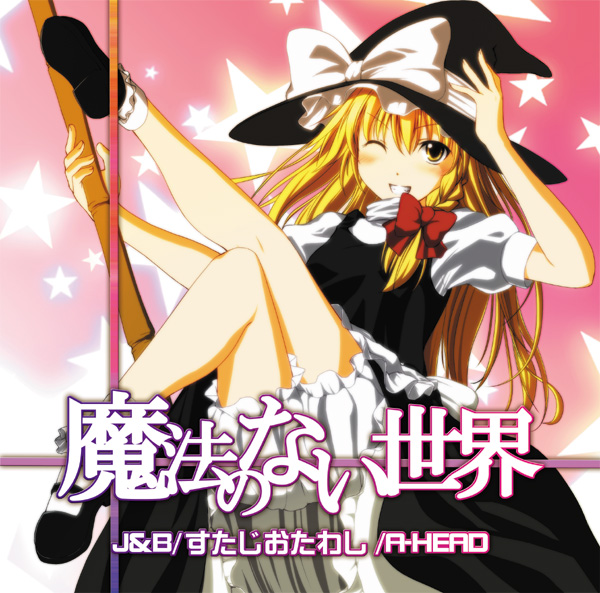
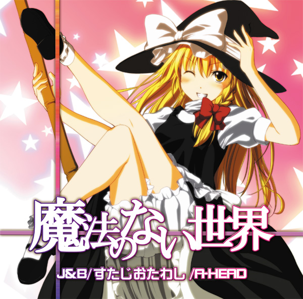

J&B/すたじおたわし/A-HEAD 異色の3サークルが送る合同アレンジCD |
|||||
|  | 魔法のない世界 | ||||
J&B/すたじおたわし/A-HEAD 異色の3サークルが送る合同アレンジCD |
|||||
|  | 魔法のない世界 | ||||
Crossfade Demo Download |
|
| ■TRACK LIST■ 1. 魔法のない世界 原曲 : メイガスナイト Arranged by J&B/すたじおたわし/A-HEAD 2. The World is Mine (J&B Cover) 原曲 : 亡き王女の為のセプテット/ツェペシュの幼き末裔 Covered by すたじおたわし 3. 雨上がり (J&B Cover) 原曲 : 万年置き傘にご注意を Covered by A-HEAD 4.幻想警備隊 (すたじおたわし Cover) 原曲 : 少女綺想曲 ～ Dream Battle/etc Covered by J&B 5.厄物語 (A-HEAD Cover) 原曲 : 厄神様の通り道 ～ Dark Road Covered by すたじおたわし 6.恋と無意識 (A-HEAD Cover) 原曲 : ラストリモート Covered by J&B |
■INFOMATION■ 10月16日 東方紅楼夢（第7回） 6号館 C-7a「J&B」/C-7b「A-HEAD」 イベント価格 500円 委託価格 未定 CD-R仕様 現在下記ショップ様にて委託中。   
■STAFF LIST■ All Musics Compose - ZUN J&B side Guitar/Manipulate - mcn Vocal - 藍/うぇり Lyrics - mcn/うぇり ※Lyricsに抜けがありました。10/17修正 すたじおたわし side Guitar/Bass/Manipulate - たわし Vocal - Takenoko/今道コージ Lyrics - たわし A-HEAD side Guitar/Bass/Manipulate - 秋時 Vocal - arato Lyrics - nade4co./マカキセキ 『魔法のない世界』 Arrange - mcn/たわし/秋時 Vocal - 藍 Guitar - mcn Bass - たわし Drums Manipulate - 秋時 Lyrics - mcn Mix - mcn All Musics Mastering - mcn Vocal Recording (Track1/6) Engineer - Seki at Chaoscillation Studio Jacket Illust - 秋時 Design - 秋時/マカキセキ |
| ■LINK■ サイズ468×95 (http://a-head.cc/ko7/b468.jpg)  サイズ200×40 (http://a-head.cc/ko7/b200.jpg) |
|